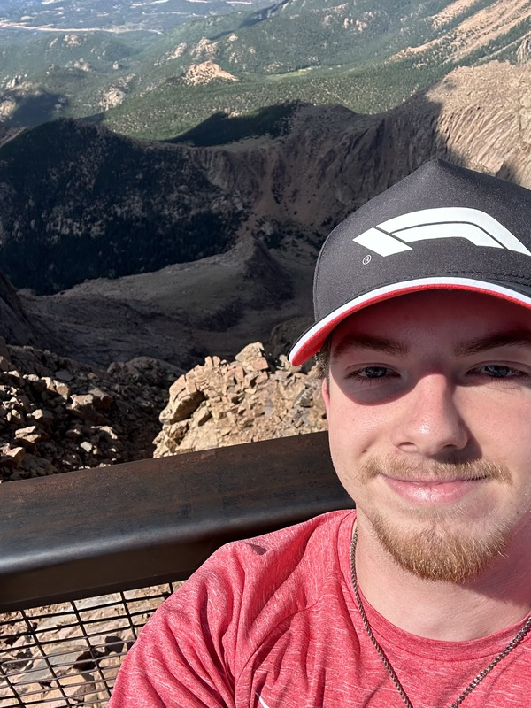

Email: matthewjondracek@lewisu.edu
Discord: irlvoid
About Me: I am Matt Ondracek, and I am a commuter at Lewis University. I came to Lewis after graduating high school from Providence Catholic High School in 2024. I have one brother and my family has always lived in Illinois.
My Academics: I am currently a junior at Lewis University, pursuing a degree in Computer Science with a minor in Computer Engineering. I chose to go down this path as I have always had an affinity for technology, and, after taking a few computer science classes in high school, I decided I wanted to pursue this degree. My enjoyment of math and science pushed me to minor in Computer Engineering.
Over the summer, I worked as a warehouse associate for Revere Electric Supply Co. My responsibilities included unloading trucks, receiving deliveries, stocking shelves, picking orders, packing orders, and loading trucks.
I have topped the leaderboards at every karting track I’ve been to.
Last Updated on 06/09/2026